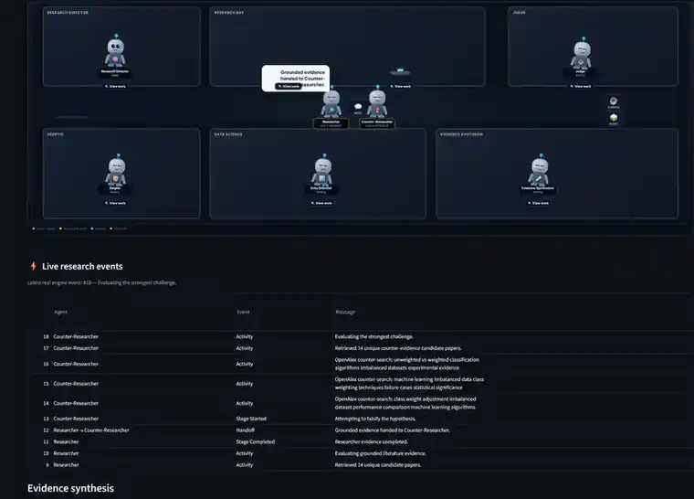

Autonomous research / Multi-agent systems
Autonomous Research Lab
A domain-agnostic local multi-agent scientific research platform designed to investigate testable questions across fields by discovering evidence, acquiring structured data, challenging hypotheses, performing analysis and producing provenance-backed conclusions.

Open full-resolution screenshot ↗
Research pipeline
Evidence-driven by design.
The lab treats literature as context and requires original conclusions to be grounded in executed, provenance-backed evidence. It can operate across domains rather than being tied to one data provider or one field.
Question→Knowledge→Gap→Data / experiments→Statistics→Replication→Judge
Research DirectorFormalizes and coordinates research questions.
ResearcherBuilds grounded evidence from accessible sources.
Counter-ResearcherActively searches for challenges and counter-evidence.
SkepticStress-tests assumptions and claims.
Data ScientistSupports empirical analysis where appropriate.
JudgeFinal scientific control rather than an evidence generator.
Live observability
Agent work and handoffs remain inspectable.
The research office visualizes the current cycle, agent state, handoffs and persisted artifacts without changing the scientific decisions themselves.

Open full-resolution screenshot ↗
Technology
Core
PythonQwenOllama
Research
Multi-agent systemsScientific APIsStructured datasetsResearch automation
Evidence
StatisticsData provenanceDeterministic analysisReplication
Quality
TestingFail-closed guardsAuditable artifacts